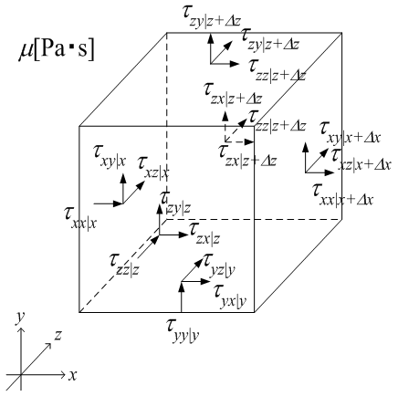

広告
粘性力

剪断応力はテンソル量です。つまり、x , y, z軸に垂直な面にそれぞれ働き、各応力は x, y, z成分に分けられます。 i 軸に垂直な面に作用する剪断応力の j 成分は、 tij[N/m2] で表されます。
x軸方向の流入・流出による粘性力をそれぞれ F |x[N], F|x+ D x[N] とすると、次式で表されます。
\[
F_{\mid x}
=
\Delta y\Delta z\,\tau_{xx\mid x}
+\Delta z x\Delta z\,\tau_{yx\mid y}
+\Delta x\Delta y\,\tau_{zx\mid z}
\]
\[
F_{\mid x+\Delta x}
=
-\Delta y\Delta z\,\tau_{xx\mid x+\Delta x}
-\Delta z x\Delta z\,\tau_{yx\mid y+\Delta y}
-\Delta x\Delta y\,\tau_{zx\mid z+\Delta z}
\]
上式は、x, y, z 軸に垂直な面にそれぞれ作用している応力のx 成分です。
y成分は、次式となります。
\[
F_{\mid y}
=
\Delta y\Delta z\,\tau_{yx\mid x}
+\Delta z x\Delta z\,\tau_{yy\mid y}
+\Delta x\Delta y\,\tau_{zy\mid z}
\]
\[
F_{\mid y+\Delta y}
=
-\Delta y\Delta z\,\tau_{xy\mid x+\Delta x}
-\Delta z x\Delta z\,\tau_{yy\mid y+\Delta y}
-\Delta x\Delta y\,\tau_{zy\mid z+\Delta z}
\]
z成分は、次式となります。
\[
F_{\mid z}
=
\Delta y\Delta z\,\tau_{yz\mid x}
+\Delta z x\Delta z\,\tau_{yz\mid y}
+\Delta x\Delta y\,\tau_{zz\mid z}
\]
\[
F_{\mid z+\Delta z}
=
-\Delta y\Delta z\,\tau_{xz\mid x+\Delta x}
-\Delta z x\Delta z\,\tau_{yz\mid y+\Delta y}
-\Delta x\Delta y\,\tau_{zz\mid z+\Delta z}
\]
剪断応力の詳細については、こちらを参照して下さい。
| prev | | | up | | | next |